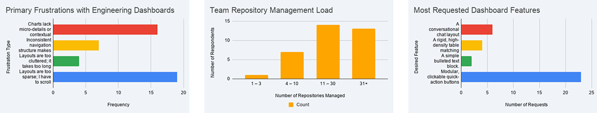
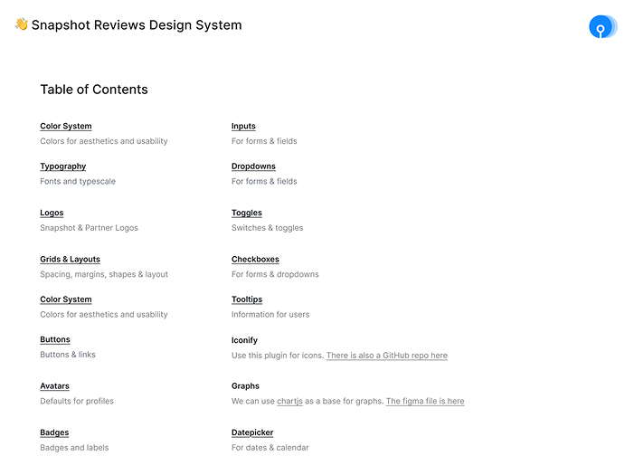
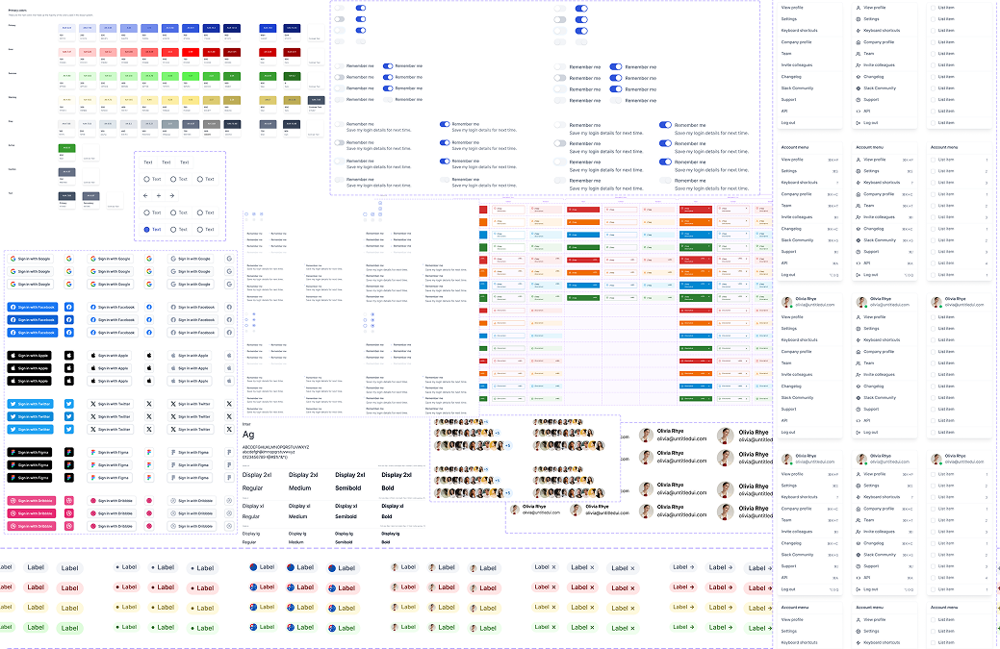
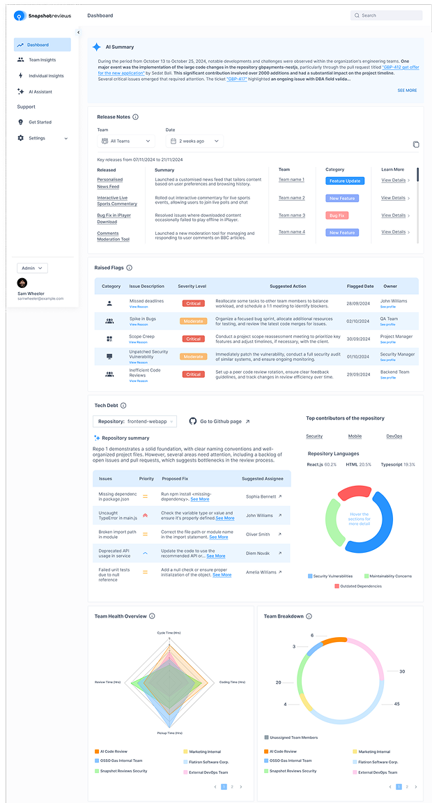
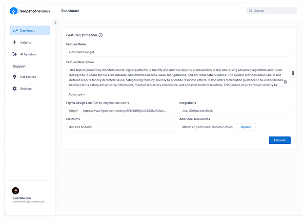
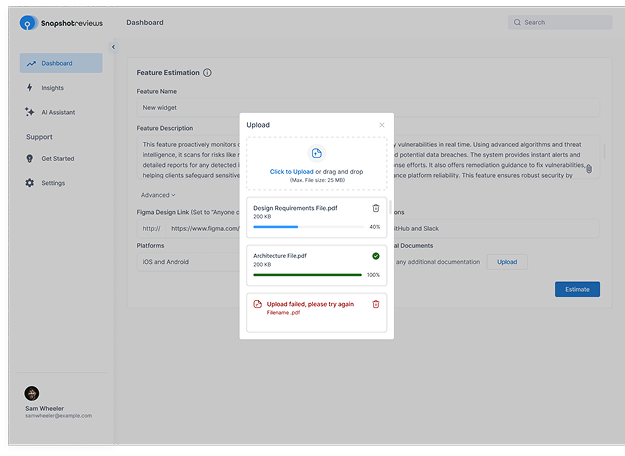
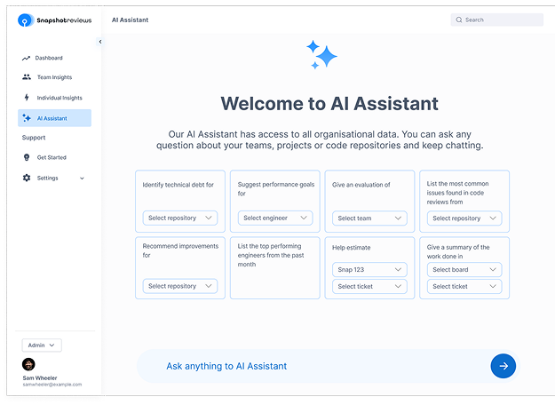

Systemic Architecture
Showcase: Snapshot Reviews
B2B code-analysis platforms that scale without a unified component framework become completely broken by engineering inconsistencies. When standard components cannot dynamically flex to accommodate complex data visualization or unexpected AI-generated summaries, design systems fail mid-to-small engineering teams entirely.
Context
Snapshot Reviews parses massive enterprise engineering metrics, pull requests, and codebase health. The platform translates fragmented technical debt into an AI-driven, actionable summary for engineering leadership. The core challenge was building a rigid, reusable token system that simultaneously gives dynamic layouts enough room to stretch for variable text densities.
The Constraints (Google Form output + Quantitative Audit)
- The Filter Threshold: Data from 36 engineering leaders proved that 86% of target users abandon metrics tracking entirely if configuring a view requires more than three distinct filtering selections.
- The Density Crisis: 61% of respondents explicitly cited "sparse layouts and endless vertical scrolling" as the primary reason critical master build exceptions and pipeline failures go completely unnoticed.
- The Tooling Void: Over 69% of engineering groups rely on manual code comments or basic keyword scripts, admitting they skip parsing high-volume logs due to configuration fatigue and interface clutter.

Data Verification Link: View the all raw response matrix and data visualization charts
System Component Architecture

I chose a highly rigid layout grid structure for global navigation and core information density, but built individual data cards to be fully responsive to variable AI content lengths. This means standard elements like data tables have fixed horizontal boundaries, while conversational spaces dynamically expand based on code complexity.

High-Density Macro Architecture
Our survey confirmed that sparse formatting choices push critical deployment errors completely off-screen. This interface groups tabular logs, code exception widgets, and radar charts into a high-density, single-viewport macro grid to solve the scrolling visibility trap reported by 61% of engineering managers.

Handling Extreme Text Layout Constraints
Enterprise description text volumes vary wildly across repositories. The input fields here utilize fully dynamic padding rules to ensure that long strings of pasted code text never cause visual truncation or break the container alignment during complex repository audits.

Error States and System Friction Points
Survey respondents highlighted that generic bulk sync operations frequently stall or fail silently during heavy data validations. This dedicated error matrix introduces localized item-by-item queue states, transparent processing percentages, and contextual retry paths to eliminate background execution blind spots.

Zero-State Intent Architecture
When asked about actionable AI utility formats, 69% of surveyed technical users rejected standard conversational chat strings in favor of predictive system controls. This landing framework translates empty query slots into modular, clickable quick-action tokens based directly on verified historical tech debt bottlenecks.

What Shipped
The design system architecture maps directly to the production components now visible on the live platform. The entire library of Figma component variants was structured to mirror semantic CSS variables, ensuring developers can effortlessly mirror the design file layout directly in code.
What Shipped
The design system architecture maps directly to the production components now visible on the live platform. The entire library of Figma component variants was structured to mirror semantic CSS variables, ensuring developers can effortlessly mirror the design file layout directly in code.
If I Measured This Tomorrow
- Handoff Efficiency: Design-to-engineering handoff cycles should drop by roughly 40% due to matching Figma structures and token properties.
- Library Integrity: The creation of detached or one-off custom components by developers should hover near zero for upcoming feature releases.
- System Longevity: Cross-platform feature additions will require zero basic element redesigning since inputs, toggles, and dropdown behaviors are completely codified.
What I'd Do Differently
The dynamic charts rely heavily on a canvas-based library that introduces constraints on how micro-interactions render inside fluid B2B web grids. Given the opportunity to restructure the tokens today, I would architect a native SVG-based chart component system to gain granular control over custom hover states and animation performance.